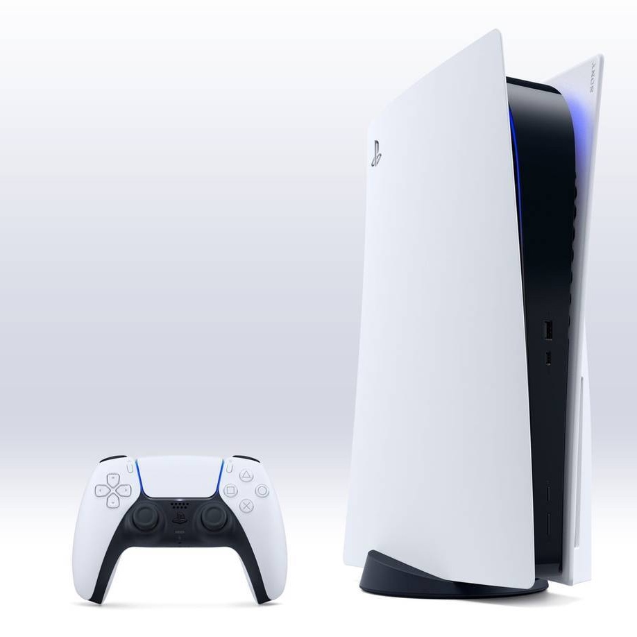

Video games market
A very competitive market
The two major consoles :

Playstation 5

The history of video games began in the 1950s and 1960s as computer scientists began designing simple games and simulations on mainframe computers, with MIT's Spacewar! in 1962 as one of the first such games to be played with a video display. The early 1970s brought the first consumer-ready video game hardware: the first home video game console, the Magnavox Odyssey, and the first arcade video games, Computer Space and Pong, the latter which was later made into a home console version. Numerous companies sprang up to capture Pong's success in both the arcade and the home by creating clones of the game, causing series of boom and bust cycles due to oversaturation and lack of innovation.
Most sold video games:
- Minecraft (238,000,000)
- Grand Theft Auto V (160,000,000)
- Tetris (EA) (100,000,000)
- Wii Sports (82,900,000)